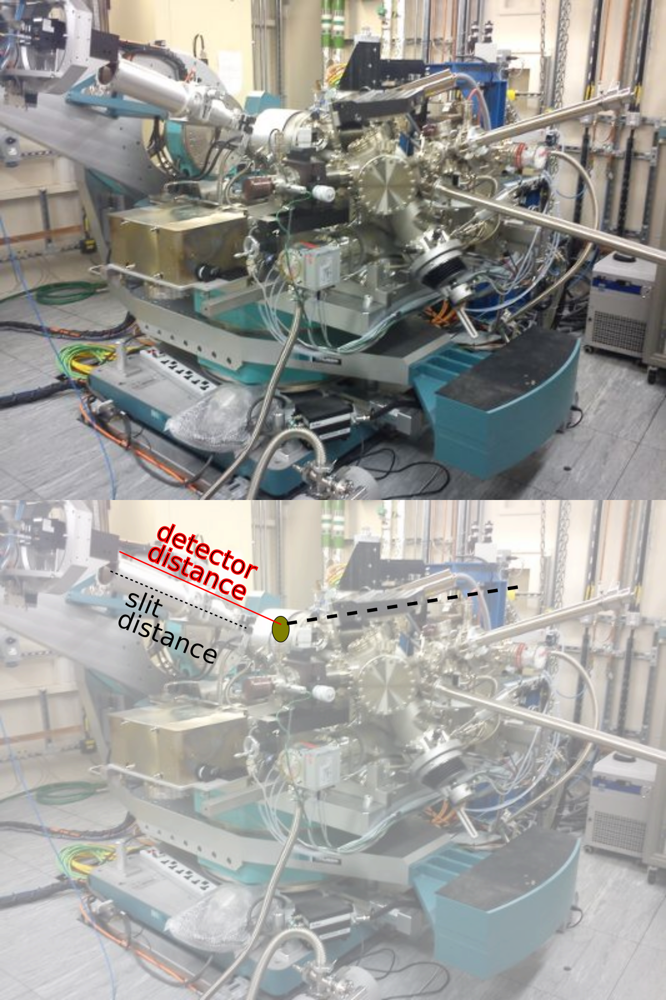

Walkthrough 2 - Optional settings applicable to all scan types
There are several optional settings that can be included for all scan types, which fall into the following categories:
masking
skipping
DPS settings
Using thv motor
Using slits
Masking
There are two methods available to mask unwanted pixels or areas from you image.
- Option 1 (preferred)
Make a mask by using the makemask command from the terminal line after loading fast_rsm. This requires two inputs:
-dir =the path to where the experiment data i stored
-s =the number of the scan you want to make the mask for
e.g.
module load fast_rsm makemask -dir /dls/i07/data/2025/si36456-5/sample1 -s 535612
This will open up the mask GUI. Save the created mask and note down the full file path to the .edf file.
- edfmaskfile
path to the .edf mask file under this variable
- Option 2
Alternatively you can directly specify pixel or regions to mask
- specific_pixels
here you provide a list of pixel positions to mask in the format [(xvalues),(yvalues)] e.g. [(233, 234),(83, 83)]
to mask whole regions, specify the indivudual regions as mask_n in the format (xstart,xend,ystart,yend) and then combine them together into a list mask_regions e.g.
- min_intensity
used to set a minimum intensity threshold below which the pixel is masked
Skipping
If something has gone wrong during the experiment and you end up with corrupted images you can still process the scan, and set the software to ignore specific images in specific scans
- skipscans
this should be a list of scans which have images to skip e.g. [123,124]
- skipimages
this is the list of images you would like to skip for each of the scans given in skipscans , and it is given as a list of lists in the format:
[[images to skip in first skipscan], [images to skip in second skipscan]]
e.g.
[[10,16,24],[11,23]]
DPS settings
If you have used the Detector Positioning System (DPS) in your experiment you will need to include the initial positions of the DPS when aligned on the straight-through beam
- using_dps
set this to True when your experiment has used the DPS The actual positions of the DPS are saved in the following four variables, saved in units of meters
dpsx_central_pixel
dpsy_central_pixel
dpsz_central_pixel
dpsz2_central_pixel
Using thv motor
- use_thv
set this to True if you have used the hexapod to access higher angles and require using the thv motor
Detector slits
If you have used extra slits infront of the detector you will need to specify the ratio of the slit distance to the sample detector distance. For example if your detector distance is 0.89m and your slits are positioned 0.55m away from the detector the ratio would be 0.55/0.89
- slitvertratio
if you have used vertical slits include the ratio of distances here
- slithorratio
if you have used horizontal slits include the ratio of distance here

Multiple configurations within one exp_setup file
Warning
This option is currently being developed and is only available on the testing branch of fast_rsm. This version can be loaded using the following commands:
module load fast_rsm/testing
- process_outputs_with_config
this option is used when you want to use different configuration settings for different process_output options. For example you may want to use one mask option for the pyfai_qmap output, but a different mask option for the pyfai_ivsq output. Here you define a list of configurations, where each configuration is a python dictionary that defines a list of “process_outputs” along with the specific settings you want to override for those outputs. For example:
# multi config options config_1 = {"process_outputs": ["pyfai_qmap", "pyfai_ivsq"], "edfmaskfile": '/dls/science/groups/das/ExampleData/i07/fast_rsm_example_data/masks/Ayo_Mask_sigvert.edf'} config_2 = {"process_outputs": ["pyfai_exitangles"], "edfmaskfile": '/dls/science/groups/das/ExampleData/i07/fast_rsm_example_data/masks/Ayo_Mask_sighor.edf'} process_outputs_with_config = [config_1, config_2]
in the above example the qmap and ivsq output will use the mask file Ayo_Mask_sigvert.edf, while the exitangles output will use the mask file Ayo_Mask_sighor.edf. You can also do the same with any of the previously defined options. For mask regions the example would look like this:
# multi config options mask_1 = (100, 150, 50, 200) mask_2 = (200, 250, 100, 250) mask_3 = (123,145, 0, 194) mask_4 = (223, 245, 0, 195) config_1 = {"process_outputs": ["pyfai_qmap", "pyfai_ivsq"], "mask_regions": [mask_1,mask_2]} config_2 = {"process_outputs": ["pyfai_exitangles"], "mask_regions": [mask_3, mask_4]} process_outputs_with_config = [config_1, config_2]
This will result in the qmap and ivsq outputs using mask_1 and mask_2, while the exitangles output will use mask_3 and mask_4.
Examples of using all of these together for an extra section in your exp_setup file is as follows:
##### ^^^^ REST OF MINIMUM SETUP FILE ^^^
map_per_image = False
# ===================================================================
# =======Optional settings applicable to all scan types
# ===================================================================
# ===========MASKING=============
edfmaskfile = '/dls/science/groups/das/ExampleData/i07/fast_rsm_example_data/masks/exc_gaps.edf'
skipscans = [123,124]
skipimages = [[10,16,24],[11,23]]
using_dps = True
dpsx_central_pixel = -0.0481825
dpsy_central_pixel = 0.0270
dpsz_central_pixel = 0.2000
dpsz2_central_pixel = 0.160
use_thv = True
slitvertratio = 0.55 / 0.89
slithorratio = 0.55 / 0.89
##### ^^^^ REST OF MINIMUM SETUP FILE ^^^
map_per_image = False
# ===================================================================
# =======Optional settings applicable to all scan types
# ===================================================================
# ===========MASKING=============
# add path to edfmaskfile created with pyFAI gui accessed via 'makemask'
# option in fast_rsm
edfmaskfile = '/dls/science/groups/das/ExampleData/i07/fast_rsm_example_data/masks/exc_gaps.edf'
# =======OPTIONS FOR SKIPPING IMAGES IF ISSUES ARE PRESENT
# CHOOSE SCANS WHICH HAVE IMAGES TO SKIP, AND THEN SPECIFY WHICH IMAGES WITHIN THOSE SCANS NEED TO BE SKIPPED
# I.E. A LIST OF IMAGES TO SKIP FOR EACH SCAN VALUE IN SKIPSCANS
skipscans = [123,124]
skipimages = [[10,16,24],[11,23]]
# Are you using the DPS system?
using_dps = True
# The DPS central pixel locations are not typically recorded in the nexus file.
# NOTE THAT THIS SHOULD BE THE CENTRAL PIXEL FOR THE UNDEFLECTED BEAM.
# UNITS OF METERS, PLEASE (everything is S.I., except energy in eV).
dpsx_central_pixel = -0.0481825
dpsy_central_pixel = 0.0270
dpsz_central_pixel = 0.2000
dpsz2_central_pixel = 0.160
# for specifying the use of the new motor thv - a combination of diffractometer and hexapod to reach larger incident angles
use_thv = True
# if not using sample slits leave both as None, if using slits set to
# slit-detector/sample-detector e.g. 0.55/0.89
slitvertratio = 0.55 / 0.89 # 0.55 / 0.89
slithorratio = 0.55 / 0.89
##### ^^^^ REST OF MINIMUM SETUP FILE ^^^
map_per_image = False
# ===================================================================
# =======Optional settings applicable to all scan types
# ===================================================================
# ===========MASKING=============
specific_pixels = [(233, 234),(83, 83)]
mask_1 = (0, 75, 0, 194)
mask_2 = (425, 485, 0, 194)
mask_regions = [mask_1, mask_2]
min_intensity = 10
skipscans = [123,124]
skipimages = [[10,16,24],[11,23]]
using_dps = True
dpsx_central_pixel = -0.0481825
dpsy_central_pixel = 0.0270
dpsz_central_pixel = 0.2000
dpsz2_central_pixel = 0.160
use_thv = True
slitvertratio = 0.55 / 0.89
slithorratio = 0.55 / 0.89
##### ^^^^ REST OF MINIMUM SETUP FILE ^^^
map_per_image = False
# ===================================================================
# =======Optional settings applicable to all scan types
# ===================================================================
# ===========MASKING=============
# alternatively specify masked regions with pixels and regions
# If you have a small number of hot pixels to mask, an exact example, where we want to mask pixel (233, 83) and pixel
# (234, 83), where pixel coordinates are (x, y):
#
specific_pixels = [(233, 234),(83, 83)]
# give (start_x, stop_x, start_y, start_y) for each region
#
mask_1 = (0, 75, 0, 194)
mask_2 = (425, 485, 0, 194)
#
# If you don't want to use any mask regions, just leave mask_regions equal to
# None.
mask_regions = [mask_1, mask_2]
# Ignore pixels with an intensity below this value. If you don't want to ignore
# any pixels, then set min_intensity = None. This is useful for dynamically
# creating masks (which is really useful for generating masks from -ve
# numbers).
min_intensity = 10
# =======OPTIONS FOR SKIPPING IMAGES IF ISSUES ARE PRESENT
# CHOOSE SCANS WHICH HAVE IMAGES TO SKIP, AND THEN SPECIFY WHICH IMAGES WITHIN THOSE SCANS NEED TO BE SKIPPED
# I.E. A LIST OF IMAGES TO SKIP FOR EACH SCAN VALUE IN SKIPSCANS
skipscans = [123,124]
skipimages = [[10,16,24],[11,23]]
# Are you using the DPS system?
using_dps = True
# The DPS central pixel locations are not typically recorded in the nexus file.
# NOTE THAT THIS SHOULD BE THE CENTRAL PIXEL FOR THE UNDEFLECTED BEAM.
# UNITS OF METERS, PLEASE (everything is S.I., except energy in eV).
dpsx_central_pixel = -0.0481825
dpsy_central_pixel = 0.0270
dpsz_central_pixel = 0.2000
dpsz2_central_pixel = 0.160
# for specifying the use of the new motor thv - a combination of diffractometer and hexapod to reach larger incident angles
use_thv = True
# if not using sample slits leave both as None, if using slits set to
# slit-detector/sample-detector e.g. 0.55/0.89
slitvertratio = 0.55 / 0.89 # 0.55 / 0.89
slithorratio = 0.55 / 0.89